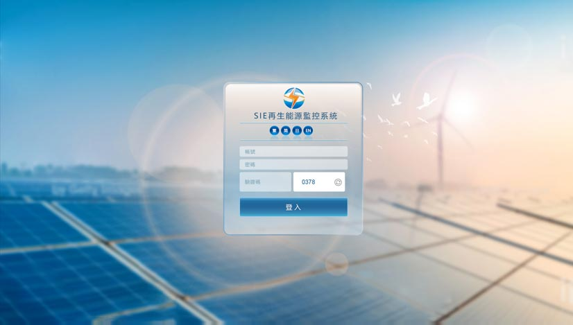
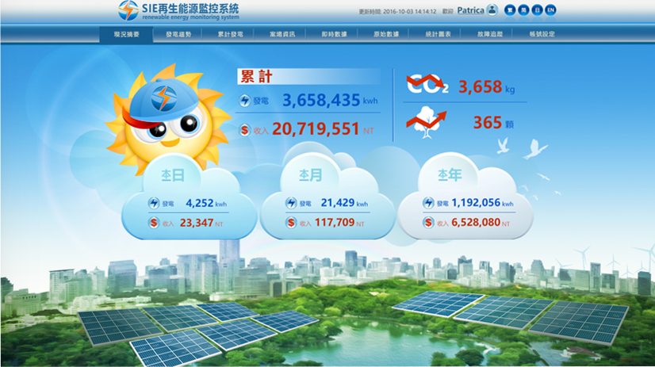
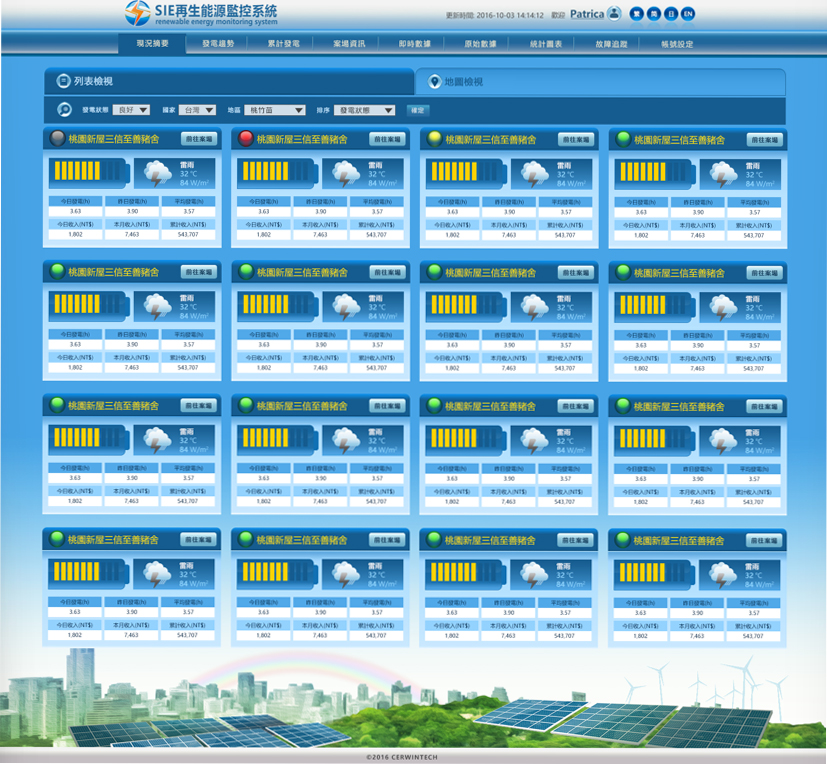
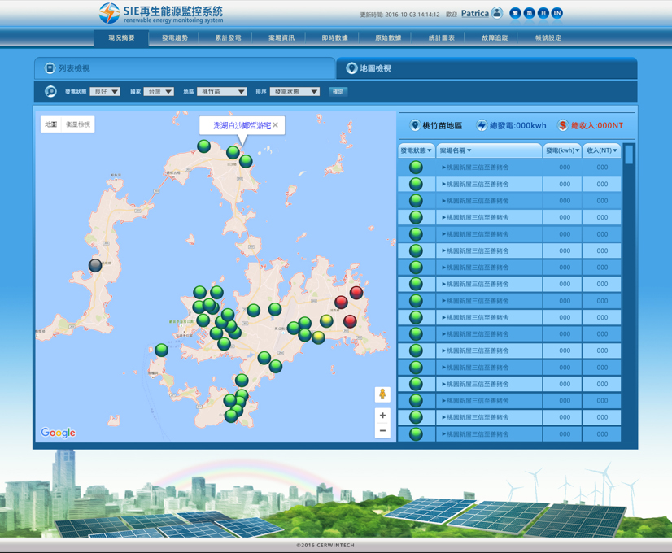
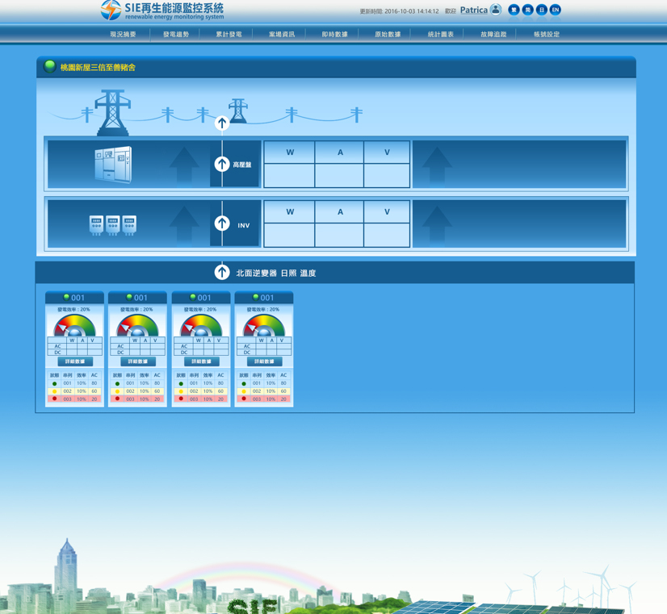

具備視覺設計到前端靜態網站的能手!
在職工作日常:2. 採Devexpress UI Component
3. End User為軟體購買者與系統服務維護者
2. Design System規劃
3. 簡單訪問End User使用情境與習慣
2. Devexpress UI Component特性為渲染後才生成對應屬性， 設計必須讓視覺在不可變動元件中變得合理，讓End User使用目的清晰明確， 譬如按鈕的視覺暗示，表格的層級區分...
3. 拆解Component類型與應用情境，避免跑版





專業簡表
特殊工作經歷
【光寶】- 前端+後端的溝通
工作簡述:
部門招商網站設計公司介入後，對於資料庫的對接；網站資料分類彙整等內容幾乎無法連結。入職後得迅速進入狀況，解決跨部門溝通及資料蒐集等各項問題，僅在試用3個月中，解決了耗時已久的網站建置，但理解到自己的任務已解，部門對於我的職務後續規劃及安排有所變動，因此在試用結束後，順利和平的自我提出到下個職場。
【優派】- 多語系的CMS網站維護
工作簡述:
身處在Marcom部門，每次更新都必須更新到10處以上的國家。雖然CMS語系自動翻譯功能強大，但是觀察到有些國家官方語言仍為英文，因此著手彙整，合併英文語系國家，讓網站更新的內容更精準的觸擊使用者。
【學承】- 視覺與點擊反饋
工作簡述:
雖然這間公司已經不付存在，但我在職期間針對課程設計之電子活動DM，向來是部門回饋最佳。判定的依據是點擊率與填表率，是難得將視覺數據化體驗的工作經驗。
【樹德科技】- 接觸SEO
工作簡述:
這間公司也不付存在! 我的工作任務是將所有的關鍵字分別在meta與alt中加入。這是我第一次接觸SEO的工作，雖然簡單暴力，但是十分有效，對於十多年前的網路環境十份受用，也是這份工作，讓我理解SEO的部分概念!
重點資歷
**股份有限公司(在職)
資深設計師
工作簡述:
1.因應系統更新、維護與製作產生之UI/UX設計規劃
2.配合公司需求產出視覺設計，多為傳單；名片，甚至是網路活動頁面
3.網站內容更新。由於使用Angular，所以由MIS建置完網站後更新
優派國際(ViewSonic)
網頁設計師
工作簡述:
1.負責海外網站內容更新，因此多用電子郵件與英國與德國等主管聯繫工作
2.網站banner設計更新
露天拍賣
網頁設計師
工作簡述:
1.網站活動頁面設計製作
2.網站banner設計更新
3.UI設計更新
學承電腦
網頁設計師
工作簡述:
1.網站活動頁面設計製作
2.網站banner設計更新
3.UI設計更新
大里資訊
網頁設計師
工作簡述:
1.各項標案視覺設計
2.專案設計維護